建筑¶
先进窑炉¶
适用于广泛的工业和化学领域。
一种先进的隔热式电窑，其热量通过金属的感应加热方式传递。
感应式窑炉的一个优点是，与大多数其他燃料加热方式相比，其加热过程更加清洁、节能且可控性更强。
 |
尺寸: | 宽 3 x 高 3 | |||
| 耗电: | 800瓦 | | |||
| 科技: | 熔炼 | | |||
| 建造材料: |
|
| |||
配方¶
| 材料: | 耗时: | 产物: |
|---|---|---|
 煤炭 (500千克) 煤炭 (500千克) |
30s |  精炼碳 (500千克) 精炼碳 (500千克) |
| 木材 (800千克) |
30s | 精炼碳 (500千克) |
 泥炭 (1200千克) 泥炭 (1200千克) |
30s | 精炼碳 (500千克) |
 粘土 (300千克) 粘土 (300千克) 沙子 (200千克) 沙子 (200千克) |
30s | 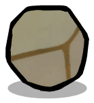 陶瓷 (500千克) |
 油页岩 (500千克) 油页岩 (500千克) |
40s |  水泥 (350千克) 水泥 (350千克) 原油 (25千克) 原油 (25千克)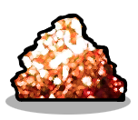 低级金属砂 (50千克) |
| 粘土 (300千克) 沙子 (200千克) |
30s | 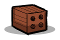 砖料 (500千克) |
先进金属精炼器¶
一座经过改进的精炼器，能够采用大规模熔炼工艺，并具备独家的金属生产能力。
一种从原始金属矿石中生产精炼金属的先进方法。
该方法能显著加热金属，并且只使用通过管道输送的超级冷却剂。
复制人不会制造物品，除非有相应的配方已在队列。
 |
尺寸: | 宽 3 x 高 5 | |||||
| 耗电: | 3千瓦 | | |||||
| 科技: | 超热锻造 | | |||||
| 建造材料: |
|
| |||||
| 建筑接口: |
|
| |||||
配方¶
| 材料: | 耗时: | 产物: |
|---|---|---|
 铜矿 (400千克) 铜矿 (400千克) |
40s |  铜 (400千克) 铜 (400千克) |
 钴矿 (400千克) 钴矿 (400千克) |
40s | 钴 (400千克) |
 黑钨矿 (400千克) 黑钨矿 (400千克) |
40s |  钨 (400千克) 钨 (400千克) |
 辉银矿 (400千克) 辉银矿 (400千克) |
40s |  银 (400千克) 银 (400千克) |
 铝矿 (400千克) 铝矿 (400千克) |
40s | 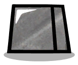 铝 (400千克) |
 金汞齐 (400千克) 金汞齐 (400千克) |
40s |  金 (400千克) 金 (400千克) |
 锌矿 (400千克) 锌矿 (400千克) |
40s |  锌 (400千克) 锌 (400千克) |
 镍矿 (400千克) 镍矿 (400千克) |
40s |  镍 (400千克) 镍 (400千克) |
 导热质 (400千克) 导热质 (400千克) |
40s |  铌 (400千克) 铌 (400千克) |
 铁矿 (400千克) 铁矿 (400千克) |
40s |  铁 (400千克) 铁 (400千克) |
 朱砂矿 (400千克) 朱砂矿 (400千克) |
40s | 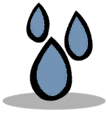 汞 (400千克) |
 银金矿 (400千克) 银金矿 (400千克) |
40s | 金 (250千克) 铜 (150千克) |
 黄铁矿 (400千克) 黄铁矿 (400千克) |
40s | 铁 (300千克) 硫 (100千克) 硫 (100千克) |
 深渊晶石 (400千克) 精炼碳 (100千克) 深渊晶石 (400千克) 精炼碳 (100千克)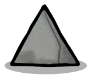 石灰 (20千克) |
40s | 钨 (50千克) 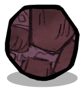 精炼磷 (100千克) 沙子 (350千克) |
| 铁 (280千克) 精炼碳 (80千克) 石灰 (40千克) |
40s | 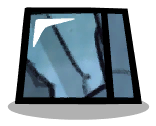 钢 (400千克) |
球磨机 (机械分离型)¶
一座大型的工业加工厂，利用钢球和特殊的振动分离装置来破碎原始矿石，并从中筛选出可能有用的资源。
将矿物原料粉碎成有用的材料和工业原料。
 |
尺寸: | 宽 5 x 高 3 | |||
| 耗电: | 800瓦 | | |||
| 科技: | 超热锻造 | | |||
| 建造材料: |
|
| |||
配方¶
| 材料: | 耗时: | 随机产物: |
|---|---|---|
| 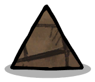 砂岩 (500千克) |
50s | 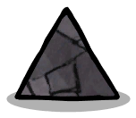 碎岩 沙子 铜矿 银金矿 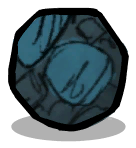 肥料 |
 沉积岩 (500千克) 沉积岩 (500千克) |
50s | 碎岩 粘土 金汞齐 黄铁矿 钴矿 盐 盐 |
 页岩 (500千克) 页岩 (500千克) |
50s | 碎岩 粘土 黄铁矿 镍矿 钴矿 盐 |
 火成岩 (500千克) 火成岩 (500千克) |
50s | 碎岩 沙子 黄铁矿 硫 铁矿 黑曜石 黑曜石 |
 花岗岩 (500千克) 花岗岩 (500千克) |
50s | 碎岩 沙子 铝矿 铁矿 黑曜石 |
 镁铁质岩 (500千克) 镁铁质岩 (500千克) |
50s | 碎岩 沙子 铝矿 银金矿 精炼磷 |
| 深渊晶石 (500千克) |
50s | 黑钨矿 钨 精炼磷 黑曜石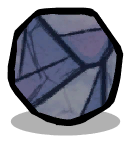 钻石 碎岩 沙子 |
基础原油精炼厂¶
一种基础的原油精炼厂，其热源来自燃烧的固体物质。
将原油通过煤炭作为热源转化为石油。
该精炼过程会产生天然气和二氧化碳
重要提示：气体输出端的管道是可选的。如果没有将气体管道连接到这些端口上，那么输出的气体将直接排放到环境中。
 |
尺寸: | 宽 3 x 高 4 | |||||||||
| 耗电: | 90瓦 | | |||||||||
| 科技: | 化石燃料 | | |||||||||
| 建造材料: |
|
| |||||||||
| 建筑接口: |
|
| |||||||||
元素转换¶
| 输入: | 输出: |
|---|---|
原油 (5千克/秒) 可燃固体 (100克/秒) 可燃固体 (100克/秒) |
 石油 (2500克/秒 于 98°C) 石油 (2500克/秒 于 98°C) 二氧化碳 (50克/秒) 二氧化碳 (50克/秒) 天然气 (90克/秒 于 115°C) 天然气 (90克/秒 于 115°C) |
工业玻璃熔炉¶
等离子弧炉利用由电弧加热器（等离子体发生器）产生的低温等离子体流来工作。
这个技术先进的玻璃熔炉不仅能够将沙子熔化成熔融玻璃，还能用于众多其他领域。
 |
尺寸: | 宽 3 x 高 3 | |||||
| 耗电: | 2.4千瓦 | | |||||
| 科技: | 超热锻造 | | |||||
| 建造材料: |
|
| |||||
| 建筑接口: |
|
| |||||
配方¶
| 材料: | 耗时: | 产物: |
|---|---|---|
| 沙子 (300千克) |
30s | 熔融玻璃 (100千克) |
 碎冰 (500千克) 碎冰 (500千克) |
10s |  水 (500千克) 水 (500千克) |
| 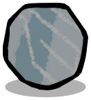 浓盐冰 (500千克) |
10s |  浓盐水 (500千克) 浓盐水 (500千克) |
| 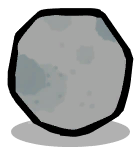 雪 (500千克) |
10s | 水 (500千克) |
 冰 (500千克) 冰 (500千克) |
10s | 水 (500千克) |
 紧压雪 (500千克) 紧压雪 (500千克) |
10s | 水 (500千克) |
 污染冰 (500千克) 污染冰 (500千克) |
10s |  污染水 (500千克) 污染水 (500千克) |
颚式破碎机¶
颚式破碎机利用强筋的咬合力来破碎石头及矿物原料。
将矿物原料粉碎成有用的材料和工业原料。
 |
尺寸: | 宽 3 x 高 2 | |||
| 耗电: | 120瓦 | | |||
| 科技: | 蛮力精炼 | | |||
| 建造材料: |
|
| |||
配方¶
| 材料: | 耗时: | 产物: |
|---|---|---|
 Egg Shell (5千克) Egg Shell (5千克) |
20s | 石灰 (5千克) |
 Pokeshell Molt (10千克) Pokeshell Molt (10千克) |
20s | 石灰 (10千克) |
| 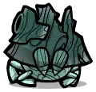 Oakshell Molt (500千克) |
20s | 木材 (500千克) |
 化石 (100千克) 化石 (100千克) |
40s | 石灰 (5千克) 碎岩 (70千克) 沙子 (25千克) |
| 盐 (100千克) |
40s |  硼砂 (5千克) 沙子 (95千克) 硼砂 (5千克) 沙子 (95千克) Table Salt (50克) Table Salt (50克) |
 磷酸盐结晶 (100千克) 磷酸盐结晶 (100千克) |
40s | 精炼磷 (70千克) 碎岩 (30千克) |
| 碎岩 (100千克) |
30s | 沙子 (100千克) |
| 黑曜石 (100千克) |
30s | 沙子 (100千克) |
| 页岩 (100千克) |
40s | 碎岩 (100千克) |
| 陶瓷 (100千克) |
40s | 碎岩 (100千克) |
| 火成岩 (100千克) |
40s | 碎岩 (100千克) |
| 砖料 (100千克) |
40s | 碎岩 (100千克) |
| 花岗岩 (100千克) |
40s | 碎岩 (100千克) |
| 沉积岩 (100千克) |
40s | 碎岩 (100千克) |
| 砂岩 (100千克) |
40s | 碎岩 (100千克) |
| 铜矿 (100千克) |
40s | 铜 (50千克) 沙子 (50千克) |
| 钴矿 (100千克) |
40s | 钴 (50千克) 沙子 (50千克) |
| 黑钨矿 (100千克) |
40s | 钨 (50千克) 沙子 (50千克) |
| 辉银矿 (100千克) |
40s | 银 (50千克) 沙子 (50千克) |
| 铝矿 (100千克) |
40s | 铝 (50千克) 沙子 (50千克) |
| 金汞齐 (100千克) |
40s | 金 (50千克) 沙子 (50千克) |
| 锌矿 (100千克) |
40s | 锌 (50千克) 沙子 (50千克) |
| 镍矿 (100千克) |
40s | 镍 (50千克) 沙子 (50千克) |
| 导热质 (100千克) |
40s | 铌 (50千克) 沙子 (50千克) |
| 铁矿 (100千克) |
40s | 铁 (50千克) 沙子 (50千克) |
| 朱砂矿 (100千克) |
40s | 汞 (50千克) 沙子 (50千克) |
| 银金矿 (100千克) |
40s | 金 (25千克) 铜 (15千克) 沙子 (50千克) |
| 黄铁矿 (100千克) |
40s | 铁 (30千克) 沙子 (70千克) |
| 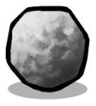 炉渣 (100千克) 碎岩 (20千克) |
40s | 水泥 (80千克) 中级金属砂 (12.5千克) 中级金属砂 (12.5千克) 高级金属砂 (7.5千克) 高级金属砂 (7.5千克) |
等离子熔炉¶
先进熔炼冶金炉，其利用由载气喷射产生的极高温度的热等离子体进行工作。高昂的能耗通过精炼过程的质量和产量得到了弥补。
采用先进技术精炼金属矿石及其他矿物原料。
在制造过程中产生大量的热量并消耗载气。
主要产物以熔融态直排至建筑下方地面，液态废料通过独立端口排出。
 |
尺寸: | 宽 5 x 高 5 | |||||||
| 耗电: | 5千瓦 | | |||||||
| 科技: | 催化剂 | | |||||||
| 建造材料: |
|
| |||||||
| 建筑接口: |
|
| |||||||
元素转换¶
| 输入: | 输出: |
|---|---|
 载气 (100克/秒) 载气 (100克/秒) |
二氧化碳 (25克/秒 于 75°C) |
配方¶
| 材料: | 耗时: | 产物: |
|---|---|---|
| 沙子 (150千克) 盐 (10千克) |
10s | 熔融玻璃 (150千克) |
| 铜矿 (500千克) |
10s |  熔融铜 (500千克) 熔融铜 (500千克) |
| 钴矿 (500千克) |
10s |  熔融钴 (500千克) 熔融钴 (500千克) |
| 黑钨矿 (500千克) |
10s |  熔融钨 (500千克) 熔融钨 (500千克) |
| 辉银矿 (500千克) |
10s |  熔融银 (500千克) 熔融银 (500千克) |
| 铝矿 (500千克) |
10s |  熔融铝 (500千克) 熔融铝 (500千克) |
| 金汞齐 (500千克) |
10s |  熔融金 (500千克) 熔融金 (500千克) |
| 锌矿 (500千克) |
10s |  熔融锌 (500千克) 熔融锌 (500千克) |
| 镍矿 (500千克) |
10s |  熔融镍 (500千克) 熔融镍 (500千克) |
| 导热质 (500千克) |
10s |  熔融铌 (500千克) 熔融铌 (500千克) |
| 铁矿 (500千克) |
10s |  熔融铁 (500千克) 熔融铁 (500千克) |
| 银金矿 (500千克) |
10s | 熔融金 (300千克) 熔融铜 (200千克) |
| 黄铁矿 (500千克) |
10s | 熔融铁 (400千克) 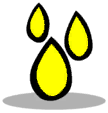 液态硫 (100千克) |
| 铁 (425千克) 精炼碳 (50千克) 石灰 (25千克) |
10s |  熔融钢 (500千克) 熔融钢 (500千克) |
| 深渊晶石 (500千克) 石灰 (20千克) |
20s | 熔融钨 (120千克) 岩浆 (380千克) 岩浆 (380千克) |
木材热解窑¶
一种基本的窑炉，它通过热解过程将木料转化为可用的煤炭。
将木材热解为煤炭。
 |
尺寸: | 宽 1 x 高 2 | |||
| 耗电: | - | | |||
| 科技: | 蛮力精炼 | | |||
| 建造材料: |
|
| |||
元素转换¶
| 输入: | 输出: |
|---|---|
| 木材 (1000克/秒) |
煤炭 (500克/秒 于 39°C) 二氧化碳 (100克/秒 于 97°C) |
土壤搅拌机¶
一种用于将多种固体材料均匀混合的设备，同时还会对这些材料进行化学处理。
一款专为农业用途设计的坚固型物料混合器，主要用于生产泥土和肥料。
 |
尺寸: | 宽 4 x 高 4 | |||||||||
| 耗电: | 480瓦 | | |||||||||
| 科技: | 农业 | | |||||||||
| 建造材料: |
|
| |||||||||
| 建筑接口: |
|
| |||||||||
配方¶
| 材料: | 耗时: | 产物: |
|---|---|---|
| 精炼磷 (50千克) 碎岩 (40千克) 水 (10千克) |
60s | 磷酸盐结晶 (100千克) |
磷酸盐结晶 (50千克) 泥土 (40千克) 水 (10千克) 泥土 (40千克) 水 (10千克) |
60s |  磷矿 (100千克) 磷矿 (100千克) |
碎岩 (40千克) 污染土 (20千克) 煤炭 (20千克) 水 (20千克) 污染土 (20千克) 煤炭 (20千克) 水 (20千克) |
60s | 泥土 (100千克) |
| 碎岩 (40千克) 污染土 (20千克) 泥炭 (20千克) 水 (20千克) |
60s | 泥土 (100千克) |
| 碎岩 (40千克) 污染土 (20千克) 木材 (20千克) 水 (20千克) |
60s | 泥土 (100千克) |
| 木材 (60千克) 碎岩 (30千克) 污染水 (10千克) |
60s | 污染土 (100千克) |
 压缩生物质 (20千克) 压缩生物质 (20千克)碎岩 (40千克) 沙子 (30千克) 水 (10千克) |
60s | 泥土 (100千克) |